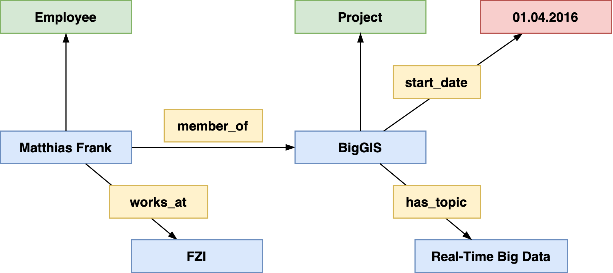
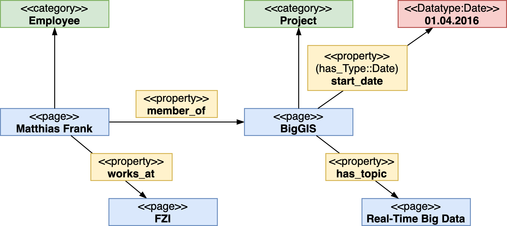

Encoding Information
- SWM represents information conceptually in form of an labeled directed acyclic graph where …
- …nodes represent pages or subobjects
- …edges represent relationshiphs between pages, literals and subobjects
Consider the following example:
Matthias Frank is an employee of the FZI Research Center for Information Technology working in the BigGIS project. BigGIS is a research project started at April 2016 and dealing with real-time big data and semantic technologies.
How could we represent this excerpt of a universe of discourse in form of an conceptual graph?
 A representation of the above example as conceptual graph
In this conceptual graph, we distinguish between …
- individuals — represented as blue boxes
- relationships — represented as yellow boxes
- literals — represented as red box
We also defined the direction of a relation to indicate the real-world semantics between their vertices.
How can we represent such information in SMW, ie., how can we transform the previous conceptual representation into an SWM’s datamodel compliant graph?
 A Semantic MediaWiki-based representation of the previous example
The central elements in SMW’s data model are pages adhering to distinct, pre-defined namespaces in order to obtain their formal, model-theoretic semantics needed for representing the real-world semantics of the universe of discourse accordingly.
Factual knowledge is editied on the wiki pages of each element, e.g. Matthias Frank or BigGIS.
Considering the above graph,
Matthias Frank,BigGIS,FZI, andReal-Time Big Dataare pages in themainnamespacemember_of,start_date,works_atandhas_topicare wiki pages in thePropertynamespacestart_datecontains a datatype annotation on its wikipage declaring the objects of statements in whichstart_dateparticipates as literal of datatypeDate; hence SMW treats it as a specific value (with certain lexical structure and restrictions) rather than a wiki page.April 2016this is a literal without a separate wiki page
Thus, datatypes in property declarations control input and output (and some more things)
- Output
[[member_of::BigGIS]]appears as link[[start_date::April 2016]]appears as date
- Input
[[my property::1000]]vs.[[my property::1,000]]- Different value if
my propertyhas typeWikipage - Same value if
my propertyhas typeNumber
- Different value if
- In particular useful when used in conjunction with PageForms to limit permitted values of an input element according to an property’s datatype.
Tip
Task:
a) Take the previous graph and determine what information (annotations) are encoded on which pages.
b) Also list all the pages that are needed for representing the above graph in SMW.